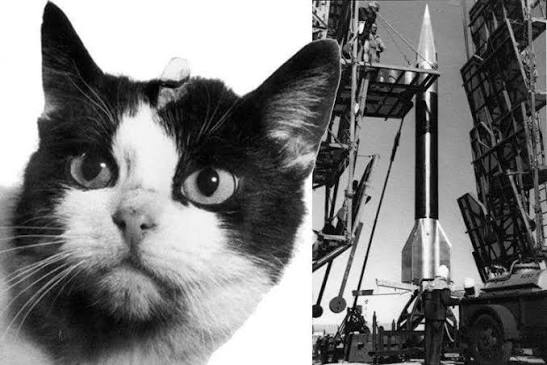
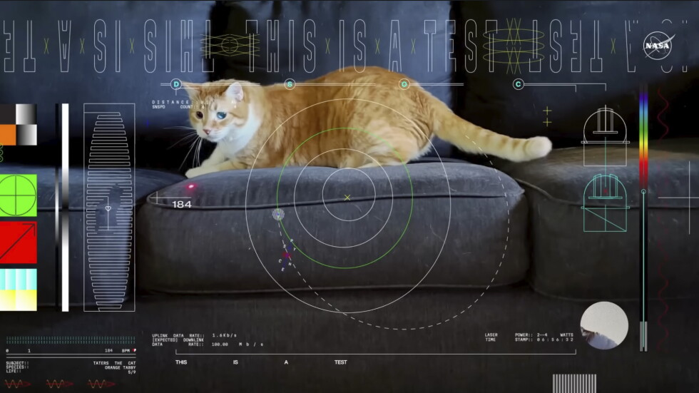

Bienvenido a la página donde podras encontrar todos los videos y fotos de la NASA! Y también sobre gatitos :)
(Cabe mencionar que las imagenes y videos pueden tardar en cargar)
¿Queres ver la foto del día?
El Programa Espacial Felino de Francia
El 18 de octubre de 1963, Félicette, una gata callejera de París que fue reclutada por el programa aeroespacial francés junto a otros 13 felinos. Se eligieron exclusivamente hembras debido a que su temperamento era más tranquilo y dócil para afrontar el encierro. Con el fin de evitar que los científicos se encariñaran con ellas, los animales no tenían nombres propios, sino números de identificación; Félicette fue catalogada formalmente como la gata C341. Antes de volar, el grupo pasó por un exigente entrenamiento de varios meses que incluyó pruebas de confinamiento en cajas diminutas, simulaciones en centrifugadoras para soportar la fuerza G y la implantación quirúrgica de electrodos en el cráneo para monitorear sus funciones cerebrales.
El día del lanzamiento, Félicette despegó desde la base de Hammaguir, en el desierto del Sahara (Argelia), a bordo del cohete Véronique AGI 47. El vuelo fue de tipo suborbital y alcanzó una altitud máxima de 157 kilómetros, superando oficialmente el límite del espacio exterior. Durante el viaje, que duró un total de 13 minutos desde el despegue hasta el aterrizaje, la gata experimentó exactamente 5 minutos de ingravidez total. Aunque la cápsula regresó a la Tierra en paracaídas y Félicette fue recuperada viva y en perfecto estado de salud, su destino final fue trágico. Dos meses después de la misión, los científicos la sacrificaron para extraerle los electrodos y examinar el impacto biológico del vuelo en su cerebro, aunque los análisis posteriores no aportaron grandes descubrimientos para la medicina espacial.
Inicialmente, el logro de Félicette quedó en el olvido y desvirtuado por los medios de comunicación, que la bautizaron erróneamente como el gato "Félix" por la famosa caricatura de la época. Tras la aclaración de las autoridades sobre su sexo, se adoptó el nombre de Félicette, pero su historia permaneció eclipsada durante décadas por las hazañas de los perros soviéticos y los monos estadounidenses. El reconocimiento histórico definitivo llegó recién en diciembre de 2019, cuando una campaña de financiamiento colectivo impulsada por entusiastas del espacio logró recaudar los fondos necesarios para diseñar e inaugurar una estatua de bronce en su honor, ubicada actualmente en la Universidad Espacial Internacional en Estrasburgo, Francia.

¡Elige el día que tu quieras!
Vibraciones cósmicas: el secreto del ronroneo felino contra la gravedad
Viajar al espacio exterior conlleva un costo físico extremo para el cuerpo humano. En un entorno de microgravedad, la ausencia de carga física elimina la presión habitual sobre el esqueleto, provocando que los astronautas pierdan entre el 1% y el 2% de su masa ósea por cada mes que pasan en órbita. Para combatir esta acelerada atrofia muscular y ósea, los científicos de la medicina aeroespacial han encontrado un aliado inesperado en la biología terrestre: el gato doméstico.
Los felinos ronronean en un rango de frecuencias constante que oscila entre los 25 y los 150 Hertz (Hz). La investigación bioacústica ha demostrado que las vibraciones mecánicas situadas específicamente entre los 25 y los 50 Hz actúan como un estímulo regenerativo a nivel celular. En los gatos, este mecanismo funciona como un sistema interno de auto-reparación de bajo consumo energético, el cual mantiene sus densidades óseas y tejidos musculares sanos incluso durante sus largos periodos de inactividad y sueño.
Inspiradas en este principio biomecánico, las agencias espaciales han desarrollado tecnologías de vibración de cuerpo entero para los astronautas. Mediante plataformas y trajes especiales que emiten microvibraciones de baja frecuencia similares al ronroneo, se logra simular el esfuerzo físico sobre el esqueleto en el espacio. Este estímulo mecánico "engaña" a las células óseas en gravedad cero, activando la reconstrucción del hueso y abriendo una vía clave para proteger la salud humana en las futuras misiones tripuladas de larga duración a Marte.
¡Puedes ver la cantidad de fotos que quieras!
Desde
hasta
El gato que viajó a la velocidad de la luz
En diciembre de 2023, la NASA no envió un animal físico al espacio, pero convirtió a un felino en el protagonista del mayor hito de las telecomunicaciones interplanetarias. A bordo de la nave espacial Psyche, que viajaba rumbo a un asteroide metálico, un video en ultra alta definición (4K) de 15 segundos esperaba el momento exacto para hacer historia. La estrella del clip era Taters, un gato atigrado naranja perteneciente a un ingeniero del Laboratorio de Propulsión a Chorro (JPL), a quien se le veía persiguiendo de forma juguetona el punto rojo de un puntero láser sobre un sillón.
El propósito de este tierno metraje era estrictamente científico. Las misiones espaciales han dependido históricamente de las ondas de radio para enviar datos, un sistema confiable pero extremadamente lento para los volúmenes de información que requerirán las futuras misiones tripuladas. Para superar este límite, la NASA diseñó la tecnología de Comunicaciones Ópticas en el Espacio Profundo (DSOC), la cual utiliza rayos láser infrarrojos para codificar y transmitir datos a velocidades hasta 100 veces superiores. El equipo necesitaba un archivo pesado de prueba para demostrar la eficacia del sistema y eligió a Taters por una doble razón: rendir homenaje a los inicios de la televisión estadounidense —que usó una figura de Félix el Gato como señal de prueba en 1928— y hacer un guiño al contenido más popular del internet terrestre.
La prueba fue un éxito rotundo que superó todas las expectativas. Cuando la nave se encontraba a una abrumadora distancia de 31 millones de kilómetros de la Tierra —unas 80 veces la distancia entre nuestro planeta y la Luna—, el transceptor óptico disparó el rayo láser hacia el Telescopio Hale en California. El video en alta definición de Taters tardó apenas 101 segundos en cruzar el vacío cósmico, alcanzando una velocidad de transmisión de 267 megabits por segundo (Mbps), un rendimiento superior al de la mayoría de las conexiones de banda ancha domésticas. Con esta hazaña, el juego de un gato doméstico demostró que la humanidad ya posee la tecnología necesaria para transmitir videos en vivo y en directo desde el planeta Marte.

¡Puedes ver la cantidad de fotos que quieras!(De forma aleatoria)